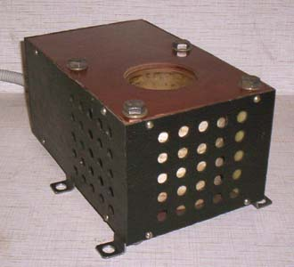
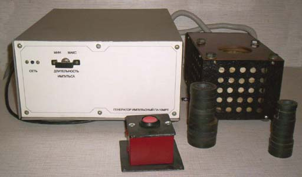
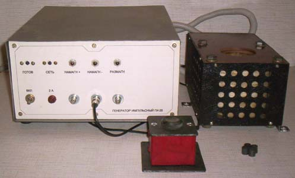
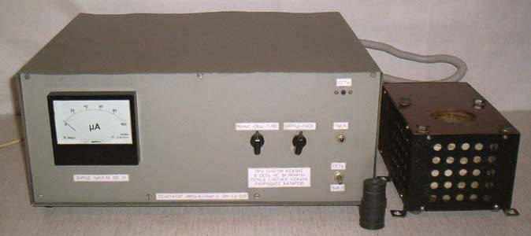
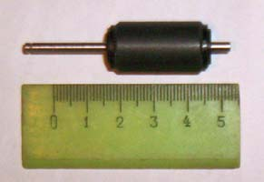
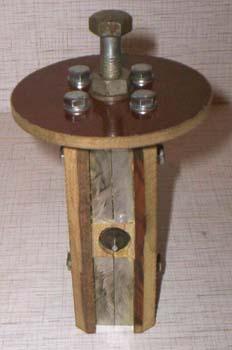
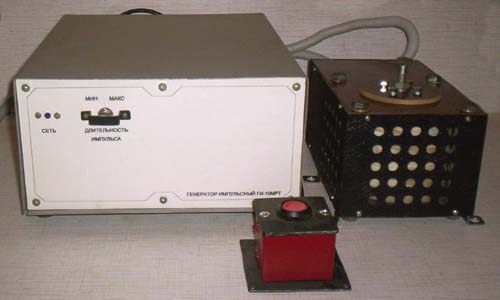
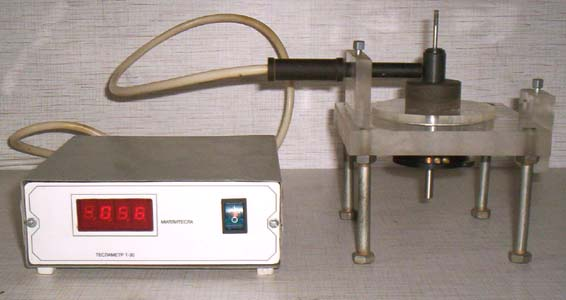
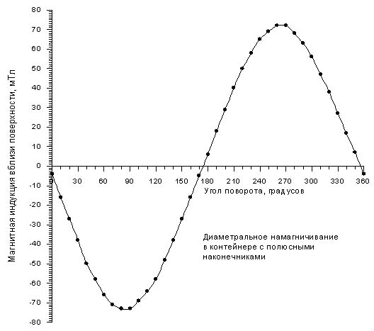

Устройство для
импульсного намагничивания и размагничивания
ферритовых постоянных магнитов (диаметр до 70 мм, высота до 80 мм)

Назначение
Устройство намагничивающее импульсное (индуктор) предназначено
для работы в составе установок импульсного намагничивания постоянных магнитов
[6] в комплекте с различными генераторами мощных импульсов тока [1 - 3] и
установок импульсного размагничивания в комплекте с биполярным генератором
мощных импульсов тока [1] (практически полное размагничивание переменным
затухающим полем) или емкостным накопителем энергии [3] (частичное
размагничивание обратным полем). Оно позволяет намагничивать и размагничивать
постоянные магниты и магнитные системы с постоянными магнитами на основе феррита
бария, феррита стронция и любых других ферритов, а также ЮНД, ЮНДК (ални,
алнико). Может применяться в лабораторных или производственных условиях.
Технические данные:
- размеры зоны намагничивания: диаметр - 70 мм, высота - 80
мм
- направление намагничивания - по высоте
- амплитуда магнитной индукции в зоне намагничивания не
менее 1.25 Тл в центре и не менее 1.0 Тл на краях при амплитуде импульса
тока не более 1000 А
- длительность импульса тока при намагничивании не более 30
мс
- длительность серии импульсов тока при размагничивании
зависит от применяемого генератора мощных импульсов тока
- импульс тока при намагничивании может быть произвольной
формы, но должен иметь заданную полярность
- максимально допустимая амплитуда импульса тока 1500 А
- готовность к работе - сразу после включения
- средняя потребляемая мощность при частоте следования
импульсов тока амплитудой 1000 А и частотой 0.05 Гц не превышает 200 Вт
- производительность устройства не менее 150 циклов
намагничивания и 50 циклов размагничивания в час, при использовании
принудительного воздушного охлаждения производительность может быть удвоена
- габаритные размеры не более 255 х 190 х 145 мм3
(без учета кабеля подключения)
- масса не более 5 кг
Установки импульсного намагничивания и размагничивания
На рис. 1 - 3 показан внешний вид установок импульсного
намагничивания и размагничивания, в которых индуктор скомплектован с различными
генераторами мощных импульсов тока. Для удобства работы с намагничивающим
устройством могут использоваться различные контейнеры под постоянные магниты, в
частности, с дополнительными концентраторами магнитного поля (полюсными
наконечниками) для повышения напряженности и однородности магнитного поля в зоне
намагничивания или для задания нужного его распределения.

Рис. 1. Установка намагничивания в комплекте с однополярным
генератором мощных импульсов тока [2].

Рис. 2. Установка намагничивания и размагничивания в комплекте
с биполярным генератором мощных импульсов тока [1].

Рис. 3. Установка намагничивания и частичного размагничивания
в комплекте с емкостным накопителем энергии 1 кДж 500 В [3].
Контроль амплитуды магнитной индукции в зоне намагничивания и
магнитной индукции постоянного магнита или магнитной системы можно производить с
помощью импульсного тесламетра [5].
Диаметральное намагничивание цилиндрических постоянных
магнитов (роторов)
В электрических машинах (электродвигателях,
электрогенераторах, датчиках) в качестве роторов могут применяться
цилиндрические постоянные двухполюсные магниты, намагниченные по направлению
диаметра (рис. 4).

Рис. 4. Ферритовый ротор (диаметр 15 мм, длина с осью 60 мм,
материал феррит бария 6БИ240, намагничивание по диаметру).
Для диаметрального намагничивания цилиндрических постоянных
магнитов может быть использован специальный контейнер (рис. 5).

Рис. 5. Контейнер для диаметрального намагничивания
цилиндрических магнитных роторов.
Контейнер состоит из концентраторов магнитного поля (полюсных
наконечников), позволяющих повысить напряженность и однородность магнитного поля
в зоне намагничивания, верхней крышки и скрепляющих боковых пластин.
Намагничиваемый цилиндрический магнит помещается в специальное посадочное
отверстие между концентраторами. Контейнер вставляется в намагничивающее
устройство (рис. 6).

Рис. 6. Намагничивающее устройство с контейнером для
диаметрального намагничивания роторов в составе установки импульсного
намагничивания.
Угловое распределение нормальной составляющей магнитной
индукции на поверхности диаметрально намагниченного магнитного ротора (вдоль
экватора), измеренное с помощью специального поворотного столика
[4], на котором крепится ротор и щуп тесламетра
[5], близко к синусоидальному (рис. 7, 8).

Рис. 7. Изучение топографии магнитного поля ротора.

Рис. 8. Распределение нормальной составляющей магнитной
индукции вдоль экваториальной линии диаметрально намагниченного цилиндрического
магнита.
Ссылки:
- Генератор мощных
импульсов тока биполярный
- Генератор мощных
импульсов тока однополярный
- Генератор мощных импульсов
тока (емкостной накопитель энергии)
- Поворотный столик с
датчиком угла поворота для изучения топографии магнитного поля
- Приборы для
измерения магнитных полей
- Установки
импульсного намагничивания и размагничивания постоянных магнитов
Словарь
терминов:
Ални, альни (англ. Alni) - магнитотвердый сплав
алюминия, никеля и железа, получаемый методами литья или порошковой
металлургии. Свойства и обозначение зависят от соотношения элементов и
способа получения. Применяется для изготовления постоянных магнитов. См.
также ЮНД, ЮНДК.
Алнико, альнико
(англ. Alnico) - магнитотвердый сплав алюминия, никеля, кобальта и
железа, получаемый методами литья или порошковой металлургии. Свойства и
обозначение зависят от соотношения элементов и способа получения.
Применяется для изготовления постоянных магнитов. См. также ЮНД, ЮНДК.
Амплитуда импульса - максимальное
абсолютное значение величины, конкретизирующей импульс.
Генератор импульсов - прибор или устройство для
создания последовательности импульсов.
Длительность импульса - длительность
интервала времени, в течение которого величина, конкретизирующая импульс,
имеет ненулевое значение.
Импульсный генератор - генератор
импульсов напряжения или тока.
Индуктор - генератор индукции.
Магнитная индукция - вектор, численно
равный пределу отношения силы, действующей со стороны магнитного поля на
элемент проводника с электрическим током, к произведению тока и длины
элемента проводника, если длина этого элемента стремится к нулю, а элемент
так расположен в поле, что этот предел имеет наибольшее значение, и
направленный перпендикулярно к направлению элемента проводника и к
направлению силы, действующей на этот элемент со стороны магнитного поля,
причем из его конца вращение по кратчайшему расстоянию от направления силы к
направлению тока в элементе проводника должно быть видно происходящим против
часовой стрелки.
Намагничивание
- воздействие на образец магнитным полем, вследствие которого у образца
появляется отличная от нуля остаточная намагниченность.
Постоянный магнит
- объект, создающий магнитное поле за счет собственных внутренних
элементарных электрических токов, текущих без использования внешнего
источника энергии в составляющем объект материале.
Размагничивание
- процедура, позволяющая уменьшить остаточную намагниченность образца до
таких значений, когда ею можно пренебречь.
Ротор - подвижная функциональная часть
электромашины.
Тесламетр (гауссметр) - прибор для
измерения магнитной индукции.
Феррит - двойной окисел состава MeO·Fe2O3,
где Me - металл (например, Ni - никель, Mn - марганец, Ba - барий, Co -
кобальт, Sr - стронций), а Fe2O3
- окись железа.
Феррит бария - магнитотвердый материал
на основе окислов железа и бария состава BaO·6Fe2O3. В
обозначении марки (например, 19БА190) первое число (19) обозначает
энергетическое произведение (в кА·Тл/м), первая буква - состав феррита (Б -
бариевый), вторая буква - свойства (А - анизотропный, И - изотропный),
второе число (190) - коэрцитивную силу по намагниченности (в кА/м).
Феррит стронция
- магнитотвердый материал на основе окислов железа и стронция состава
SrO·6Fe2O3. В обозначении марки (например, 28СА250)
первое число (28) обозначает энергетическое произведение (в кА·Тл/м), первая
буква - состав феррита (С - стронциевый), вторая буква - свойства (А -
анизотропный, И - изотропный), второе число (250) - коэрцитивную силу по
намагниченности (в кА/м).
ЮНД, ЮНДК - отечественное обозначение группы
магнитотвердых сплавов на основе железа, алюминия, никеля, кобальта с
легирующими добавками, получаемых методами литья (сплавы ЮНД, ЮНДК) или
порошковой металлургии (металлокерамические сплавы ММК). Буквы в обозначении
марки сплава обозначают: Ю - алюминий, Н - никель, Д - медь, К - кобальт, Б
- ниобий, С - кремний, Т - титан, а цифры - процентное содержание элемента
(железо не обозначается). Применяются для изготовления постоянных магнитов.
См. также ални, алнико.
03.08.2007
31.10.2013
Альтернативные источники
энергии
Компьютеры и
Интернет
Магнитные поля
Механотронные системы
Перспективные
разработки
Электроника и
технология
Главная страница